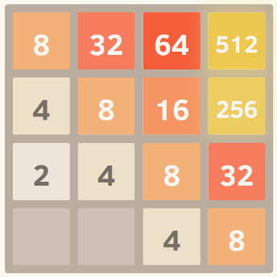
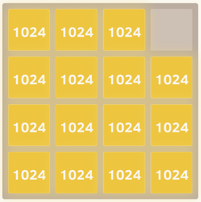
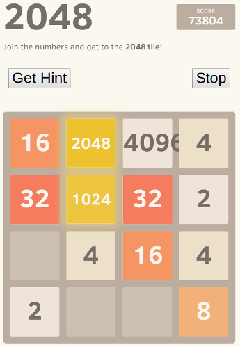

What is the optimal algorithm for the game 2048?
I have recently stumbled upon the game 2048. You merge similar tiles by moving
them in any of the four directions to make "bigger" tiles. After each move, a
new tile appears at random empty position with a value of either 2 or 4.
The game terminates when all the boxes are filled and there are no moves that
can merge tiles, or you create a tile with a value of 2048.
One, I need to follow a well-defined strategy to reach the goal. So, I thought of writing a program for it.
My current algorithm:
while (!game_over) { for each possible move: count_no_of_merges_for_2-tiles and 4-tiles choose the move with a large number of merges }
What I am doing is at any point, I will try to merge the tiles with values 2
and 4, that is, I try to have 2 and 4 tiles, as minimum as possible. If
I try it this way, all other tiles were automatically getting merged and the
strategy seems good.
But, when I actually use this algorithm, I only get around 4000 points before the game terminates. Maximum points AFAIK is slightly more than 20,000 points which is way larger than my current score. Is there a better algorithm than the above?
Answer
I developed a 2048 AI using expectimax optimization, instead of the minimax search used by @ovolve's algorithm. The AI simply performs maximization over all possible moves, followed by expectation over all possible tile spawns (weighted by the probability of the tiles, i.e. 10% for a 4 and 90% for a 2). As far as I'm aware, it is not possible to prune expectimax optimization (except to remove branches that are exceedingly unlikely), and so the algorithm used is a carefully optimized brute force search.
Performance
The AI in its default configuration (max search depth of 8) takes anywhere from 10ms to 200ms to execute a move, depending on the complexity of the board position. In testing, the AI achieves an average move rate of 5-10 moves per second over the course of an entire game. If the search depth is limited to 6 moves, the AI can easily execute 20+ moves per second, which makes for some interesting watching.
To assess the score performance of the AI, I ran the AI 100 times (connected to the browser game via remote control). For each tile, here are the proportions of games in which that tile was achieved at least once:
2048: 100% 4096: 100% 8192: 100% 16384: 94% 32768: 36%
The minimum score over all runs was 124024; the maximum score achieved was 794076. The median score is 387222. The AI never failed to obtain the 2048 tile (so it never lost the game even once in 100 games); in fact, it achieved the 8192 tile at least once in every run!
Here's the screenshot of the best run:

This game took 27830 moves over 96 minutes, or an average of 4.8 moves per second.
Implementation
My approach encodes the entire board (16 entries) as a single 64-bit integer (where tiles are the nybbles, i.e. 4-bit chunks). On a 64-bit machine, this enables the entire board to be passed around in a single machine register.
Bit shift operations are used to extract individual rows and columns. A single row or column is a 16-bit quantity, so a table of size 65536 can encode transformations which operate on a single row or column. For example, moves are implemented as 4 lookups into a precomputed "move effect table" which describes how each move affects a single row or column (for example, the "move right" table contains the entry "1122 -> 0023" describing how the row [2,2,4,4] becomes the row [0,0,4,8] when moved to the right).
Scoring is also done using table lookup. The tables contain heuristic scores computed on all possible rows/columns, and the resultant score for a board is simply the sum of the table values across each row and column.
This board representation, along with the table lookup approach for movement and scoring, allows the AI to search a huge number of game states in a short period of time (over 10,000,000 game states per second on one core of my mid-2011 laptop).
The expectimax search itself is coded as a recursive search which alternates between "expectation" steps (testing all possible tile spawn locations and values, and weighting their optimized scores by the probability of each possibility), and "maximization" steps (testing all possible moves and selecting the one with the best score). The tree search terminates when it sees a previously-seen position (using a transposition table), when it reaches a predefined depth limit, or when it reaches a board state that is highly unlikely (e.g. it was reached by getting 6 "4" tiles in a row from the starting position). The typical search depth is 4-8 moves.
Heuristics
Several heuristics are used to direct the optimization algorithm towards favorable positions. The precise choice of heuristic has a huge effect on the performance of the algorithm. The various heuristics are weighted and combined into a positional score, which determines how "good" a given board position is. The optimization search will then aim to maximize the average score of all possible board positions. The actual score, as shown by the game, is not used to calculate the board score, since it is too heavily weighted in favor of merging tiles (when delayed merging could produce a large benefit).
Initially, I used two very simple heuristics, granting "bonuses" for open squares and for having large values on the edge. These heuristics performed pretty well, frequently achieving 16384 but never getting to 32768.
Petr Morávek (@xificurk) took my AI and added two new heuristics. The first heuristic was a penalty for having non-monotonic rows and columns which increased as the ranks increased, ensuring that non-monotonic rows of small numbers would not strongly affect the score, but non-monotonic rows of large numbers hurt the score substantially. The second heuristic counted the number of potential merges (adjacent equal values) in addition to open spaces. These two heuristics served to push the algorithm towards monotonic boards (which are easier to merge), and towards board positions with lots of merges (encouraging it to align merges where possible for greater effect).
Furthermore, Petr also optimized the heuristic weights using a "meta- optimization" strategy (using an algorithm called CMA-ES), where the weights themselves were adjusted to obtain the highest possible average score.
The effect of these changes are extremely significant. The algorithm went from achieving the 16384 tile around 13% of the time to achieving it over 90% of the time, and the algorithm began to achieve 32768 over 1/3 of the time (whereas the old heuristics never once produced a 32768 tile).
I believe there's still room for improvement on the heuristics. This algorithm definitely isn't yet "optimal", but I feel like it's getting pretty close.
That the AI achieves the 32768 tile in over a third of its games is a huge milestone; I will be surprised to hear if any human players have achieved 32768 on the official game (i.e. without using tools like savestates or undo). I think the 65536 tile is within reach!
You can try the AI for yourself. The code is available at https://github.com/nneonneo/2048-ai.
Suggest
I'm the author of the AI program that others have mentioned in this thread. You can view the AI in action or read the source.
Currently, the program achieves about a 90% win rate running in javascript in the browser on my laptop given about 100 milliseconds of thinking time per move, so while not perfect (yet!) it performs pretty well.
Since the game is a discrete state space, perfect information, turn-based game like chess and checkers, I used the same methods that have been proven to work on those games, namely minimax search with alpha-beta pruning. Since there is already a lot of info on that algorithm out there, I'll just talk about the two main heuristics that I use in the static evaluation function and which formalize many of the intuitions that other people have expressed here.
Monotonicity
This heuristic tries to ensure that the values of the tiles are all either increasing or decreasing along both the left/right and up/down directions. This heuristic alone captures the intuition that many others have mentioned, that higher valued tiles should be clustered in a corner. It will typically prevent smaller valued tiles from getting orphaned and will keep the board very organized, with smaller tiles cascading in and filling up into the larger tiles.
Here's a screenshot of a perfectly monotonic grid. I obtained this by running the algorithm with the eval function set to disregard the other heuristics and only consider monotonicity.

Smoothness
The above heuristic alone tends to create structures in which adjacent tiles are decreasing in value, but of course in order to merge, adjacent tiles need to be the same value. Therefore, the smoothness heuristic just measures the value difference between neighboring tiles, trying to minimize this count.
A commenter on Hacker News gave an interesting formalization of this idea in terms of graph theory.
Here's a screenshot of a perfectly smooth grid.

Free Tiles
And finally, there is a penalty for having too few free tiles, since options can quickly run out when the game board gets too cramped.
And that's it! Searching through the game space while optimizing these criteria yields remarkably good performance. One advantage to using a generalized approach like this rather than an explicitly coded move strategy is that the algorithm can often find interesting and unexpected solutions. If you watch it run, it will often make surprising but effective moves, like suddenly switching which wall or corner it's building up against.
Edit:
Here's a demonstration of the power of this approach. I uncapped the tile values (so it kept going after reaching 2048) and here is the best result after eight trials.

Yes, that's a 4096 alongside a 2048. =) That means it achieved the elusive 2048 tile three times on the same board.